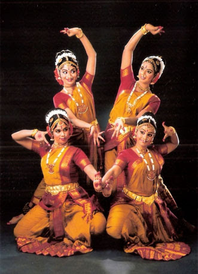
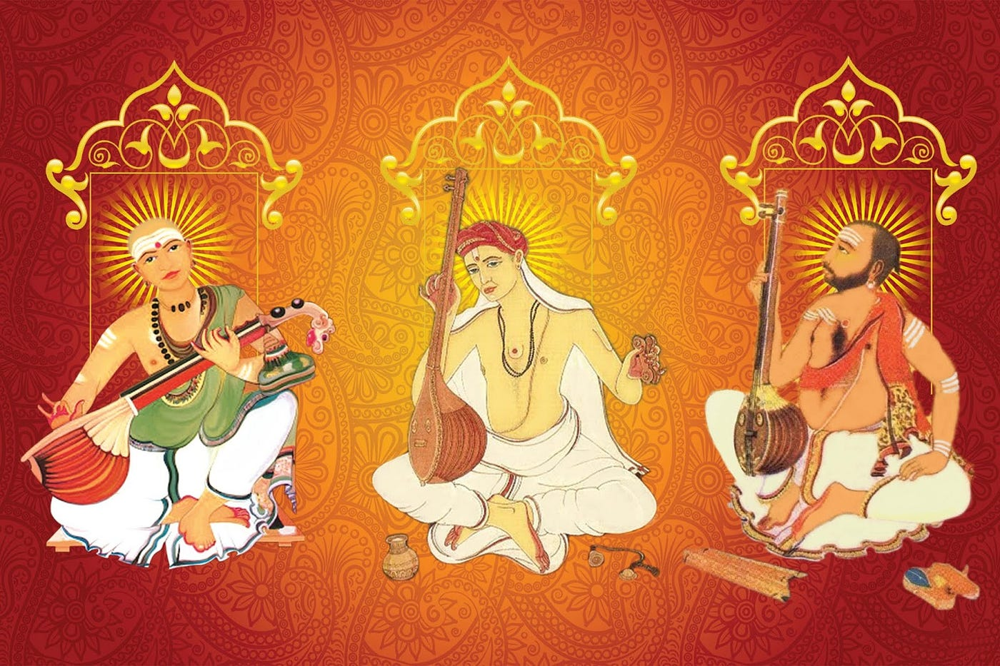

Kuchipudi
Kuchipudi is a classical Indian dance form that originated in the village of Kuchipudi in the Indian state of Andhra Pradesh. It is named after the village where it was developed.
Here are some key points about Kuchipudi:
Origins: Kuchipudi has its roots in ancient Hindu texts and traditions, particularly in the Natya Shastra, a Sanskrit text on the performing arts. It was traditionally performed by Brahmin males, but today both men and women perform this dance form.
Elements: Kuchipudi is characterized by a unique blend of graceful movements, intricate footwork, and expressive gestures known as mudras. It also incorporates elements of storytelling, with dancers portraying characters from Hindu mythology and other traditional tales.
Music: Kuchipudi performances are accompanied by classical Carnatic music. The music consists of melodic and rhythmic elements, with instruments such as the mridangam, violin, flute, and veena providing the musical accompaniment.
Styles:There are two main styles of Kuchipudi: Nritta (pure dance) and Nritya (expressive dance). Nritta focuses on rhythmic movements and intricate footwork, while Nritya emphasizes storytelling and emotional expression.
Overall, Kuchipudi is celebrated for its beauty, grace, and versatility, and it continues to be a cherished part of India's cultural heritage.

Carnatic music
Carnatic music is a classical music tradition that originated in the southern part of India, including the states of Andhra Pradesh, Tamil Nadu, Telangana, Karnataka, and Kerala. It is one of the oldest and richest musical traditions in the world, with a history spanning over thousands of years.
Here are some key points about Carnatic music:
Origins: Carnatic music has its roots in the ancient Hindu scriptures, particularly the Sama Veda, one of the four Vedas, which contains hymns sung in praise of the gods. Over time, Carnatic music evolved into a sophisticated system of musical theory and practice, with a rich repertoire of compositions and a highly developed system of ragas (melodic scales) and talas (rhythmic patterns).
Elements: Carnatic music is characterized by its melodic and rhythmic complexity, as well as its emphasis on improvisation. It features intricate melodies and ornamentation, with performers using subtle nuances such as gamakas (ornamental slides) and bhavas (emotional expressions) to enhance the beauty of the music.
Instruments: Carnatic music is typically performed with a variety of traditional Indian musical instruments, including the violin, veena, flute, mridangam (a double-headed drum), ghatam (a clay pot), and kanjira (a small tambourine). Each instrument plays a unique role in accompanying the vocalist or instrumentalist and providing rhythmic and melodic support.
Compositions:Carnatic music includes a vast repertoire of compositions, ranging from ancient devotional hymns known as Varnams and Kritis to more contemporary compositions composed by renowned composers such as Tyagaraja, Muthuswami Dikshitar, and Shyama Shastri. These compositions are typically performed in concerts and recitals, where they are often improvised upon and embellished by the performers.
Overall, Carnatic music is celebrated for its beauty, depth, and spiritual significance, and it continues to be a cherished part of Andhra Pradesh's cultural heritage.
